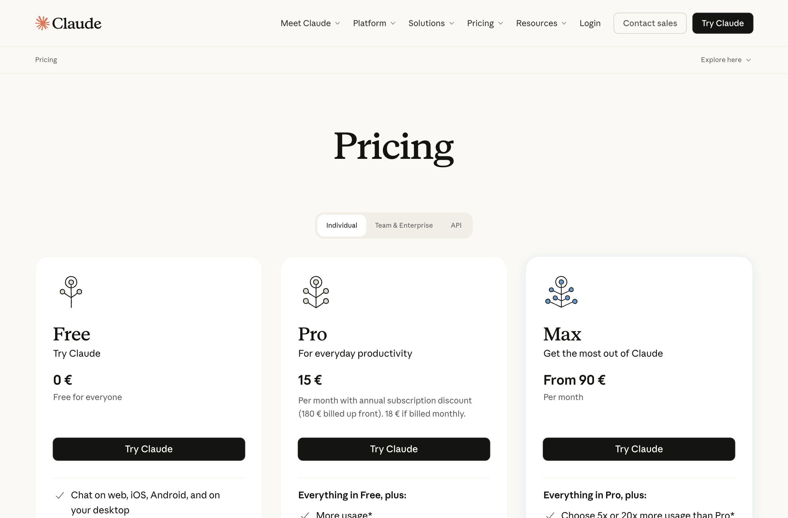

1
Kup płatną subskrypcję Claude
Narzędzie, którego użyjemy na warsztatach (Claude Code), działa na płatnym koncie Claude. Wystarczy najtańszy plan Pro. Nie potrzebujesz żadnego „klucza API" ani planu firmowego.
- Wejdź na claude.com/pricing.
- Wybierz plan Pro (plan Max też zadziała, ale na start nie jest potrzebny).
- Załóż konto lub zaloguj się i opłać subskrypcję.
- Zapamiętaj e-mail i hasło. Tym samym kontem zalogujesz się później w VS Code.

Zrzut ekranu wkrótceTo samo konto Claude zaloguje Cię potem we wtyczce w VS Code. Nie płacisz drugi raz.